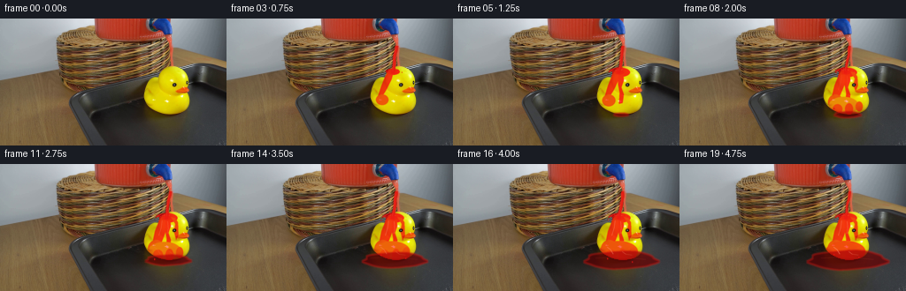
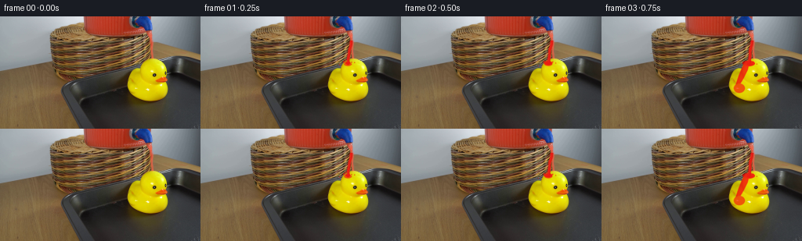
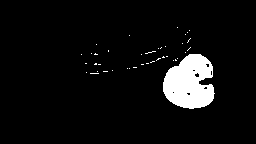
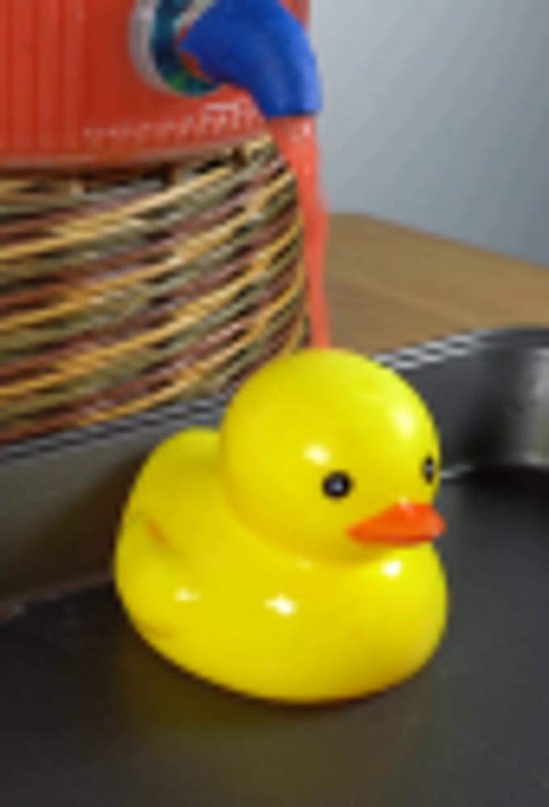

CODING AGENTS AS PIXEL WORLD MODELS
traex/GPT-5.6-Sol · 0085
点击播放 · 原生 RGB 像素
逐轮保存的候选
回放视频、检查图与代码变化。
每份候选均可单独播放。实际图片检查记录在下方工具轨迹中。
候选 01播放与检查图
点击播放 · 原生 RGB 像素


展开代码变化
--- 上一保存版本
+++ 本次保存版本
@@ -0,0 +1,218 @@
+from pathlib import Path
+import math
+import numpy as np
+import cv2
+from PIL import Image, ImageDraw, ImageFilter
+import artifact_io
+
+CASE = Path(__file__).resolve().parent
+W, H, N = 256, 144, 20
+S = 4
+
+def smoothstep(a, b, x):
+ if x <= a: return 0.0
+ if x >= b: return 1.0
+ x = (x-a)/(b-a)
+ return x*x*(3-2*x)
+
+def mask_draw(draw_fn, blur=0.0):
+ im = Image.new('L', (W*S, H*S), 0)
+ d = ImageDraw.Draw(im)
+ class D:
+ def polygon(self, pts, **kw): d.polygon([(int(x*S),int(y*S)) for x,y in pts], **kw)
+ def ellipse(self, box, **kw): d.ellipse(tuple(int(v*S) for v in box), **kw)
+ def line(self, pts, width=1, **kw): d.line([(int(x*S),int(y*S)) for x,y in pts], width=max(1,int(width*S)), **kw)
+ draw_fn(D())
+ if blur: im = im.filter(ImageFilter.GaussianBlur(blur*S))
+ return np.asarray(im.resize((W,H), Image.Resampling.LANCZOS), dtype=np.float32)/255.0
+
+def solid_layer(frame, mask, rgb, alpha=1.0):
+ a = np.clip(mask*alpha,0,1)[...,None]
+ c = np.asarray(rgb, dtype=np.float32)
+ return frame*(1-a)+c*a
+
+def shaded_red(frame, mask, alpha=.9, bright=True):
+ # Retain the illumination and shape cues of the surface under a glossy, red liquid.
+ lum = frame[...,0]*.27 + frame[...,1]*.65 + frame[...,2]*.08
+ if bright:
+ color = np.stack([np.clip(165+.40*lum,185,255),
+ np.clip(5+.065*lum,7,30),
+ np.clip(7+.045*lum,8,23)], axis=2)
+ else:
+ color = np.stack([np.clip(70+.44*lum,75,168),
+ np.clip(3+.035*lum,3,16),
+ np.clip(5+.03*lum,5,18)], axis=2)
+ a=np.clip(mask*alpha,0,1)[...,None]
+ return frame*(1-a)+color*a
+
+def draw_stream(frame, i, p):
+ # Narrow gravity-driven jet from the visible blue tap to the duck's crown.
+ phase = i*.71
+ ys = np.linspace(31,62,24)
+ centers=[]
+ for y in ys:
+ q=(y-31)/31
+ x=192.2 - 4.5*q + .42*math.sin(q*7.0+phase) + .18*math.sin(q*15-phase*.7)
+ centers.append((x,y))
+ width = 2.55 + .42*math.sin(phase*.8)
+ left=[(x-width*(.46+.05*math.sin(y*.6+phase)),y) for x,y in centers]
+ right=[(x+width*(.54+.05*math.cos(y*.5-phase)),y) for x,y in centers[::-1]]
+ jet=mask_draw(lambda d:d.polygon(left+right,fill=255), .10)
+ edge=mask_draw(lambda d:d.line(centers,width=width+1.25,fill=255), .12)
+ frame=shaded_red(frame, edge, .54, True)
+ frame=solid_layer(frame, jet, (231,27,18), .92)
+ # A slim moving specular streak gives the jet cylindrical volume.
+ hi=[(x-.55,y) for x,y in centers[2:-2]]
+ hmask=mask_draw(lambda d:d.line(hi,width=.48,fill=205), .12)
+ frame=solid_layer(frame,hmask,(255,142,106),.52)
+ return frame
+
+def splash_mask(i, p):
+ # Brief small crown splashes, continually changing while the jet strikes.
+ phase=i*.88
+ def fn(d):
+ impact=(188.2,61.2)
+ # low impact collar
+ d.ellipse((183.3,59.0,193.2,63.7),fill=185)
+ rays=[(-1.45,-1.0),(-1.0,-1.7),(.75,-1.55),(1.5,-.75)]
+ for k,(dx,dy) in enumerate(rays):
+ length=2.0+1.8*(.5+.5*math.sin(phase+k*1.9))
+ x2=impact[0]+dx*length; y2=impact[1]+dy*length
+ d.line([impact,(x2,y2)],width=.65,fill=230)
+ d.ellipse((x2-.55,y2-.55,x2+.55,y2+.55),fill=245)
+ # detached pin droplets; their positions move ballistically but remain subtle
+ for k in range(3):
+ age=(p*2.7+k*.31)%1.0
+ side=-1 if k!=1 else 1
+ x=188+side*(4+9*age)+math.sin(phase+k)*.7
+ y=60-8*age+12*age*age+k*.45
+ r=.45+.25*(1-age)
+ d.ellipse((x-r,y-r,x+r,y+r),fill=210)
+ return mask_draw(fn,.08)
+
+def coat_masks(p):
+ # Cumulative wetting follows several gravity-fed rivulets down the molded duck.
+ top=smoothstep(.00,.30,p)
+ mid=smoothstep(.12,.65,p)
+ low=smoothstep(.32,1.0,p)
+ def wet(d):
+ # crown patch progressively broadens from the impact point
+ rx=2.5+10.0*top; ry=1.7+5.8*top
+ d.ellipse((188-rx,59-ry*.45,188+rx,59+ry),fill=245)
+ # left/back sheet runs down neck toward body
+ if mid>0:
+ pts=[(182.5,60),(188.8,60),(186.5,69+10*mid),(181.7,79+13*mid),
+ (175.5,89+10*mid),(170.0,91+10*mid),(175.0,76),(179.0,66)]
+ d.polygon(pts,fill=225)
+ d.ellipse((169-2*mid,86,183+3*mid,98+9*mid),fill=180)
+ # central narrow rivulet over the breast
+ if mid>.05:
+ q=(mid-.05)/.95
+ pts=[(187,61),(192,61),(193,70),(190.4,78),(193.0,86),
+ (191.7,94+13*q),(187.5,95+13*q),(188.4,84),(186.7,75)]
+ d.polygon(pts,fill=235)
+ # right temple rivulet, kept narrow enough that the eye remains readable
+ if mid>.22:
+ q=(mid-.22)/.78
+ pts=[(193,60),(198,61),(201,66),(201.5,72+9*q),(199,78+9*q),
+ (196.7,76),(198,68)]
+ d.polygon(pts,fill=205)
+ # accumulated sheet across upper body
+ if low>0:
+ d.ellipse((169-4*low,89-2*low,202+8*low,108+3*low),fill=int(95+100*low))
+ # three dangling lobes at the lower edge
+ d.ellipse((173,97,184,108+3*low),fill=200)
+ d.ellipse((187,96,196,109+4*low),fill=210)
+ d.ellipse((199,94,207,105+5*low),fill=190)
+ return mask_draw(wet,.30)
+
+def pool_mask(p, i):
+ q=smoothstep(.18,1.0,p)
+ if q<=0: return np.zeros((H,W),np.float32)
+ # irregular but smoothly expanding shallow puddle, visible around the duck's base
+ cx,cy=190,109.0
+ rx=7+37*q; ry=1.4+9.5*q
+ pts=[]
+ for k in range(48):
+ a=2*math.pi*k/48
+ irregular=1+.055*math.sin(5*a+0.4)+.035*math.sin(9*a)
+ x=cx+rx*math.cos(a)*irregular
+ y=cy+ry*math.sin(a)*(1+.06*math.sin(4*a))
+ pts.append((x,y))
+ return mask_draw(lambda d:d.polygon(pts,fill=235), .48)
+
+def tray_limit():
+ # exclude background/table: the pool is physically confined to the tray floor.
+ poly=[(89,87),(173,58),(236,55),(255,65),(255,143),(120,143)]
+ return mask_draw(lambda d:d.polygon(poly,fill=255),.15)
+
+def duck_surface_mask(base):
+ hsv=cv2.cvtColor(base,cv2.COLOR_RGB2HSV)
+ yy,xx=np.mgrid[0:H,0:W]
+ geom=((xx>156)&(xx<220)&(yy>51)&(yy<113))
+ colorful=(hsv[...,1]>105)&(hsv[...,2]>90)&(hsv[...,0]>=4)&(hsv[...,0]<=42)
+ m=(geom&colorful).astype(np.uint8)*255
+ # Close tiny highlight holes but retain larger eye details after a gentle operation.
+ m=cv2.morphologyEx(m,cv2.MORPH_CLOSE,np.ones((3,3),np.uint8))
+ return cv2.GaussianBlur(m,(3,3),.45).astype(np.float32)/255
+
+def gloss_details(frame,p,duckmask):
+ top=smoothstep(.05,.30,p); mid=smoothstep(.2,.8,p); low=smoothstep(.4,1,p)
+ def gl(d):
+ if top: d.line([(183,58.5),(187,57.5),(191,58.2)],width=.7,fill=int(190*top))
+ if mid:
+ d.line([(183.0,64),(182.0,72),(179.4,81)],width=.7,fill=int(210*mid))
+ d.line([(189.3,65),(190.0,73),(188.8,79)],width=.55,fill=int(180*mid))
+ if low:
+ d.line([(174,94),(178,97),(181,102)],width=.8,fill=int(185*low))
+ d.line([(191,99),(195,102),(202,103)],width=.65,fill=int(190*low))
+ m=mask_draw(gl,.18)*duckmask
+ return solid_layer(frame,m,(255,156,119),.72)
+
+def make_frames():
+ base=np.asarray(Image.open(CASE/'first_frame.png').convert('RGB'),dtype=np.uint8)
+ assert base.shape==(H,W,3)
+ duck=duck_surface_mask(base)
+ tray=tray_limit()
+ frames=[base.copy()]
+ for i in range(1,N):
+ p=i/(N-1)
+ f=base.astype(np.float32).copy()
+ # Puddle underneath/around the duck, then coating on its actual colored surface.
+ pool=pool_mask(p,i)*tray
+ f=shaded_red(f,pool,.86,False)
+ # thin crimson meniscus and white-red reflection on the puddle
+ if pool.max()>0:
+ q=smoothstep(.18,1,p)
+ rim=cv2.morphologyEx((pool*255).astype(np.uint8),cv2.MORPH_GRADIENT,np.ones((3,3),np.uint8))/255.0
+ f=solid_layer(f,rim,(206,24,18),.44)
+ refl=mask_draw(lambda d:d.line([(172-12*q,106.5),(187,105.0),(205+14*q,108.0)],width=.55,fill=int(170*q)),.22)*pool
+ f=solid_layer(f,refl,(255,104,80),.48)
+ wet=coat_masks(p)*duck
+ f=shaded_red(f,wet,.91,True)
+ f=gloss_details(f,p,duck)
+ # Jet and impact are foreground and remain active for the entire demonstration.
+ f=draw_stream(f,i,p)
+ sm=splash_mask(i,p)
+ f=solid_layer(f,sm,(239,29,18),.87)
+ # late drips fall from two low points into the collected liquid
+ if p>.42:
+ q=(p-.42)/.58
+ def drips(d):
+ # left drop repeatedly separates from the wet flank
+ age=(q*2.1)%1
+ y=102+8*age+4*age*age
+ d.ellipse((174.0,y-1.0,175.4,y+1.1),fill=225)
+ if p>.62:
+ age2=((q-.34)*2.0)%1
+ y2=103+8*age2+3*age2*age2
+ d.ellipse((202.0,y2-.8,203.3,y2+1.0),fill=210)
+ dm=mask_draw(drips,.10)*tray
+ f=solid_layer(f,dm,(222,20,14),.90)
+ frames.append(np.clip(f,0,255).astype(np.uint8))
+ return np.stack(frames)
+
+if __name__=='__main__':
+ frames=make_frames()
+ assert np.array_equal(frames[0],np.asarray(Image.open(CASE/'first_frame.png').convert('RGB')))
+ artifact_io.save(frames,CASE)
可观测工具轨迹
实际执行的命令与返回图片。
命令 1exit 0
/bin/bash -lc "cat GENERATION_RULES.md && printf '\\n---PROMPT---\\n' && cat prompt.txt"
命令 2exit 1
/bin/bash -lc "find . -maxdepth 2 -type f -printf '%p\\n' | sort && printf '\\n--- tools ---\\n' && command -v ffmpeg && command -v python3"
命令 3exit 0
/bin/bash -lc 'cat artifact_io.py'
命令 4exit 0
/bin/bash -lc "python3 - <<'PY' mods=['PIL','numpy','cv2','scipy','imageio'] for m in mods: try: x=__import__(m); print(m,'yes',getattr(x,'__version__','')) except Exception as e: print(m,'no',e) PY command -v ffmpeg || true command -v convert || true"
命令 5exit 0
/bin/bash -lc "python3 - <<'PY'
import cv2, numpy as np
im=cv2.imread('first_frame.png'); hsv=cv2.cvtColor(im,cv2.COLOR_BGR2HSV)
# HSV OpenCV yellow hue 20-40? print samples RGB/H
for p in [(190,65),(188,75),(180,92),(200,98),(210,78),(192,107),(170,100),(190,30),(190,50),(200,120)]:
x,y=p; print(p,'bgr',im[y,x], 'hsv',hsv[y,x])
mask=(hsv[:,:,0]>20)&(hsv[:,:,0]<40)&(hsv[:,:,1]>120)&(hsv[:,:,2]>100)
y,x=np.where(mask); print(x.min(),x.max(),y.min(),y.max(),len(x))
cv2.imwrite('.tmp/yellowmask.png',(mask*255).astype('uint8'))
PY"命令 6exit 0
/bin/bash -lc "python3 - <<'PY'
from PIL import Image
im=Image.open('first_frame.png')
im.crop((145,0,230,125)).resize((680,1000)).save('.tmp/crop.png')
PY"命令 7exit 0
/bin/bash -lc "cat > generate.py <<'PY'
from pathlib import Path
import math
import numpy as np
import cv2
from PIL import Image, ImageDraw, ImageFilter
import artifact_io
CASE = Path(__file__).resolve().parent
W, H, N = 256, 144, 20
S = 4
def smoothstep(a, b, x):
if x <= a: return 0.0
if x >= b: return 1.0
x = (x-a)/(b-a)
return x*x*(3-2*x)
def mask_draw(draw_fn, blur=0.0):
im = Image.new('L', (W*S, H*S), 0)
d = ImageDraw.Draw(im)
class D:
def polygon(self, pts, **kw): d.polygon([(int(x*S),int(y*S)) for x,y in pts], **kw)
def ellipse(self, box, **kw): d.ellipse(tuple(int(v*S) for v in box), **kw)
def line(self, pts, width=1, **kw): d.line([(int(x*S),int(y*S)) for x,y in pts], width=max(1,int(width*S)), **kw)
draw_fn(D())
if blur: im = im.filter(ImageFilter.GaussianBlur(blur*S))
return np.asarray(im.resize((W,H), Image.Resampling.LANCZOS), dtype=np.float32)/255.0
def solid_layer(frame, mask, rgb, alpha=1.0):
a = np.clip(mask*alpha,0,1)[...,None]
c = np.asarray(rgb, dtype=np.float32)
return frame*(1-a)+c*a
def shaded_red(frame, mask, alpha=.9, bright=True):
# Retain the illumination and shape cues of the surface under a glossy, red liquid.
lum = frame[...,0]*.27 + frame[...,1]*.65 + frame[...,2]*.08
if bright:
color = np.stack([np.clip(165+.40*lum,185,255),
np.clip(5+.065*lum,7,30),
np.clip(7+.045*lum,8,23)], axis=2)
else:
color = np.stack([np.clip(70+.44*lum,75,168),
np.clip(3+.035*lum,3,16),
np.clip(5+.03*lum,5,18)], axis=2)
a=np.clip(mask*alpha,0,1)[...,None]
return frame*(1-a)+color*a
def draw_stream(frame, i, p):
# Narrow gravity-driven jet from the visible blue tap to the duck's crown.
phase = i*.71
ys = np.linspace(31,62,24)
centers=[]
for y in ys:
q=(y-31)/31
x=192.2 - 4.5*q + .42*math.sin(q*7.0+phase) + .18*math.sin(q*15-phase*.7)
centers.append((x,y))
width = 2.55 + .42*math.sin(phase*.8)
left=[(x-width*(.46+.05*math.sin(y*.6+phase)),y) for x,y in centers]
right=[(x+width*(.54+.05*math.cos(y*.5-phase)),y) for x,y in centers[::-1]]
jet=mask_draw(lambda d:d.polygon(left+right,fill=255), .10)
edge=mask_draw(lambda d:d.line(centers,width=width+1.25,fill=255), .12)
frame=shaded_red(frame, edge, .54, True)
frame=solid_layer(frame, jet, (231,27,18), .92)
# A slim moving specular streak gives the jet cylindrical volume.
hi=[(x-.55,y) for x,y in centers[2:-2]]
hmask=mask_draw(lambda d:d.line(hi,width=.48,fill=205), .12)
frame=solid_layer(frame,hmask,(255,142,106),.52)
return frame
def splash_mask(i, p):
# Brief small crown splashes, continually changing while the jet strikes.
phase=i*.88
def fn(d):
impact=(188.2,61.2)
# low impact collar
d.ellipse((183.3,59.0,193.2,63.7),fill=185)
rays=[(-1.45,-1.0),(-1.0,-1.7),(.75,-1.55),(1.5,-.75)]
for k,(dx,dy) in enumerate(rays):
length=2.0+1.8*(.5+.5*math.sin(phase+k*1.9))
x2=impact[0]+dx*length; y2=impact[1]+dy*length
d.line([impact,(x2,y2)],width=.65,fill=230)
d.ellipse((x2-.55,y2-.55,x2+.55,y2+.55),fill=245)
# detached pin droplets; their positions move ballistically but remain subtle
for k in range(3):
age=(p*2.7+k*.31)%1.0
side=-1 if k"'!=1 else 1
x=188+side*(4+9*age)+math.sin(phase+k)*.7
y=60-8*age+12*age*age+k*.45
r=.45+.25*(1-age)
d.ellipse((x-r,y-r,x+r,y+r),fill=210)
return mask_draw(fn,.08)
def coat_masks(p):
# Cumulative wetting follows several gravity-fed rivulets down the molded duck.
top=smoothstep(.00,.30,p)
mid=smoothstep(.12,.65,p)
low=smoothstep(.32,1.0,p)
def wet(d):
# crown patch progressively broadens from the impact point
rx=2.5+10.0*top; ry=1.7+5.8*top
d.ellipse((188-rx,59-ry*.45,188+rx,59+ry),fill=245)
# left/back sheet runs down neck toward body
if mid>0:
pts=[(182.5,60),(188.8,60),(186.5,69+10*mid),(181.7,79+13*mid),
(175.5,89+10*mid),(170.0,91+10*mid),(175.0,76),(179.0,66)]
d.polygon(pts,fill=225)
d.ellipse((169-2*mid,86,183+3*mid,98+9*mid),fill=180)
# central narrow rivulet over the breast
if mid>.05:
q=(mid-.05)/.95
pts=[(187,61),(192,61),(193,70),(190.4,78),(193.0,86),
(191.7,94+13*q),(187.5,95+13*q),(188.4,84),(186.7,75)]
d.polygon(pts,fill=235)
# right temple rivulet, kept narrow enough that the eye remains readable
if mid>.22:
q=(mid-.22)/.78
pts=[(193,60),(198,61),(201,66),(201.5,72+9*q),(199,78+9*q),
(196.7,76),(198,68)]
d.polygon(pts,fill=205)
# accumulated sheet across upper body
if low>0:
d.ellipse((169-4*low,89-2*low,202+8*low,108+3*low),fill=int(95+100*low))
# three dangling lobes at the lower edge
d.ellipse((173,97,184,108+3*low),fill=200)
d.ellipse((187,96,196,109+4*low),fill=210)
d.ellipse((199,94,207,105+5*low),fill=190)
return mask_draw(wet,.30)
def pool_mask(p, i):
q=smoothstep(.18,1.0,p)
if q<=0: return np.zeros((H,W),np.float32)
# irregular but smoothly expanding shallow puddle, visible around the duck'"'s base
cx,cy=190,109.0
rx=7+37*q; ry=1.4+9.5*q
pts=[]
for k in range(48):
a=2*math.pi*k/48
irregular=1+.055*math.sin(5*a+0.4)+.035*math.sin(9*a)
x=cx+rx*math.cos(a)*irregular
y=cy+ry*math.sin(a)*(1+.06*math.sin(4*a))
pts.append((x,y))
return mask_draw(lambda d:d.polygon(pts,fill=235), .48)
def tray_limit():
# exclude background/table: the pool is physically confined to the tray floor.
poly=[(89,87),(173,58),(236,55),(255,65),(255,143),(120,143)]
return mask_draw(lambda d:d.polygon(poly,fill=255),.15)
def duck_surface_mask(base):
hsv=cv2.cvtColor(base,cv2.COLOR_RGB2HSV)
yy,xx=np.mgrid[0:H,0:W]
geom=((xx>156)&(xx<220)&(yy>51)&(yy<113))
colorful=(hsv[...,1]>105)&(hsv[...,2]>90)&(hsv[...,0]>=4)&(hsv[...,0]<=42)
m=(geom&colorful).astype(np.uint8)*255
# Close tiny highlight holes but retain larger eye details after a gentle operation.
m=cv2.morphologyEx(m,cv2.MORPH_CLOSE,np.ones((3,3),np.uint8))
return cv2.GaussianBlur(m,(3,3),.45).astype(np.float32)/255
def gloss_details(frame,p,duckmask):
top=smoothstep(.05,.30,p); mid=smoothstep(.2,.8,p); low=smoothstep(.4,1,p)
def gl(d):
if top: d.line([(183,58.5),(187,57.5),(191,58.2)],width=.7,fill=int(190*top))
if mid:
d.line([(183.0,64),(182.0,72),(179.4,81)],width=.7,fill=int(210*mid))
d.line([(189.3,65),(190.0,73),(188.8,79)],width=.55,fill=int(180*mid))
if low:
d.line([(174,94),(178,97),(181,102)],width=.8,fill=int(185*low))
d.line([(191,99),(195,102),(202,103)],width=.65,fill=int(190*low))
m=mask_draw(gl,.18)*duckmask
return solid_layer(frame,m,(255,156,119),.72)
def make_frames():
base=np.asarray(Image.open(CASE/'first_frame.png').convert('RGB'),dtype=np.uint8)
assert base.shape==(H,W,3)
duck=duck_surface_mask(base)
tray=tray_limit()
frames=[base.copy()]
for i in range(1,N):
p=i/(N-1)
f=base.astype(np.float32).copy()
# Puddle underneath/around the duck, then coating on its actual colored surface.
pool=pool_mask(p,i)*tray
f=shaded_red(f,pool,.86,False)
# thin crimson meniscus and white-red reflection on the puddle
if pool.max()>0:
q=smoothstep(.18,1,p)
rim=cv2.morphologyEx((pool*255).astype(np.uint8),cv2.MORPH_GRADIENT,np.ones((3,3),np.uint8))/255.0
f=solid_layer(f,rim,(206,24,18),.44)
refl=mask_draw(lambda d:d.line([(172-12*q,106.5),(187,105.0),(205+14*q,108.0)],width=.55,fill=int(170*q)),.22)*pool
f=solid_layer(f,refl,(255,104,80),.48)
wet=coat_masks(p)*duck
f=shaded_red(f,wet,.91,True)
f=gloss_details(f,p,duck)
# Jet and impact are foreground and remain active for the entire demonstration.
f=draw_stream(f,i,p)
sm=splash_mask(i,p)
f=solid_layer(f,sm,(239,29,18),.87)
# late drips fall from two low points into the collected liquid
if p>.42:
q=(p-.42)/.58
def drips(d):
# left drop repeatedly separates from the wet flank
age=(q*2.1)%1
y=102+8*age+4*age*age
d.ellipse((174.0,y-1.0,175.4,y+1.1),fill=225)
if p>.62:
age2=((q-.34)*2.0)%1
y2=103+8*age2+3*age2*age2
d.ellipse((202.0,y2-.8,203.3,y2+1.0),fill=210)
dm=mask_draw(drips,.10)*tray
f=solid_layer(f,dm,(222,20,14),.90)
frames.append(np.clip(f,0,255).astype(np.uint8))
return np.stack(frames)
if __name__=='__main__':
frames=make_frames()
assert np.array_equal(frames[0],np.asarray(Image.open(CASE/'first_frame.png').convert('RGB')))
artifact_io.save(frames,CASE)
PY
python3 generate.py
python3 - <<'PY'
import numpy as np
from PIL import Image
x=np.load('pixels.npz')['pixels']; print(x.shape,x.dtype)
a=np.asarray(Image.open('frames/00.png')); b=np.asarray(Image.open('first_frame.png')); print('frame0 exact',np.array_equal(a,b),'changed pixels last',np.any(np.asarray(Image.open('frames/19.png'))"'!=b,axis=2).sum())
PY'命令 8exit 0
/bin/bash -lc "ls -lh generate.py pixels.npz index.html inspection.png frames/00.png frames/19.png && python3 - <<'PY'
import numpy as np
from PIL import Image
fs=[]
for i in range(20):
a=np.asarray(Image.open(f'frames/{i:02d}.png'))
assert a.shape==(144,256,3) and a.dtype==np.uint8
fs.append(a)
print('all frames valid; temporal changed pixel counts:')
for i in range(1,20): print(i, np.any(fs[i]"'!=fs[i-1],axis=2).sum(), end='"'; ')
print()
PY"视觉工具实际返回图片 1

视觉工具实际返回图片 2

视觉工具实际返回图片 3

视觉工具实际返回图片 4

视觉工具实际返回图片 5

保存候选 1 份；完成命令 8 次；可验证图片返回 5 张。原始 API 响应与完整日志保留在本地。